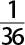

前一章我们谈到了下面这个思想：信念可能具有程度上的区分。粗略地说，我们是这样理解这个思想的意思的：一个人可能会对有些事情更有信心，而对其他事情则不然。我相信我已经写了一本教科书。我也相信你会发现这本书里面有些内容很有意思。但是，相比我相信你（一个随机选择的读者）会发现这本书有些内容很有意思，我更加确信我已经写了一本教科书。因此，尽管这两者我都相信，但我对前者有一个比后者更高的置信度。而且，即使我们正在比较两件人们相信并非 实际发生的事情时，这种差异仍然可能会存在。例如，我相信奥巴马总统在他剩余的任期之内将不会被刺杀。然而我更加强烈地相信1加1不等于3。
中译本边码：38
主观解释背后的基本思想有两个稍有不同的版本，分别由布鲁诺·德·菲尼蒂（Bruno De Finetti 1937）和弗兰克·拉姆塞（Frank Ramsey 1926）各自独立提出，这个基本思想指的是：如果它们是合乎理性的，那么，我们的置信度就应该通过特定的方式加以限定，而这些方式碰巧和概率公理相对应。这乍看上去似乎会令人感到惊讶，但我们可以通过一种简约而优雅的方式，也就是通过考虑打赌的行为，对其进行论证。
想象你和我打算一起打个赌，我们赌一赌某件事情会不会发生。这个赌可能是：你喜欢的球星或球队是否会在下一场比赛中获胜，或者是更微不足道的事，比如你们国家的什么地方明天会不会下雨。我们继而就一个赌注S 达成一致，这个赌注就是能够换手的钱的最大量。
中译本边码：39
我将选择赌这个事件发生或者不发生。（注意，我在这里说“发生的事件”只是为了方便而已，它可以很容易地被翻译成“为真的陈述”。因此，我们可以把这个赌理解为涉及命题或者陈述。例如，赌曼联队会在下一场比赛中获胜，相当于赌“曼联队会在下一场比赛中获胜”这个陈述为真。）但是，在我做出选择之前，你打算挑选一个数字，一个赌商（betting quotient）b ，并认为这个赌将按照如下方式进行：
1.如果我赌该事件不发生，那么你将付给我bS 。如果该事件发生了，那么我将付给你S 。
2.如果我赌该事件发生，那么你将付给我（1－b ）S 。如果该事件没有发生，那么我将付给你S 。
选择b 是为了确定这个赌的“赔率”，赔率通常被表达为一个比值，即b /（1－b ）。例如，将b 的值选择为二分之一，就是说该事件具有“成败均等的赔率”；如果你赌赢了，你的赌本将会翻倍，否则你就会赔掉赌本。（你可能会注意到，如果你将b 的值选择为1，那么，如果赔率按照上述方式定义的话，它也就没有值了。我们将会看到，这一点设置是刻意安排的。）
我们也想安排这样的场景，以便在你看来你给出的赔率是公平的，因此我们应该增加很多要求才是。首先，关于我是想赌该事件发生还是赌该事件不发生，你不会拥有任何信息。假如你拥有这样的信息，你就可能会按照（你所认为的）有利于自己的方式去设计赔率了。想象一下，假如你知道我将赌掷骰子的结果是五点，而你认为一个五点的机会是六分之一。这样，你可能会选择一个赔率，比如成败均等的赔率（如上所述），让五点的机会看起来比六分之一大得多。然后，如果我胜了，我只会让我的钱翻倍，但你留住这笔钱的机会（chance）更大——事实上在你看来是六分之五。对你来说很好！对我来说很坏！要把这一点想清楚，只需想想如果我一直赌结果是五点，结果会怎么样。
中译本边码：40
一个更自然的、根本不涉及机会的例子也能表明这一点。假想你是一个卖汽车的。如果我告诉你我想买某个具体类型的一辆车，你会给我报一个价钱。如果我告诉你我想卖一辆相同类型的车，你就会给我报一个不同的（较低的）价钱。因此，为了从你那里探知到你真正 认为一辆车值多少钱，也就是公平的价钱是多少，我应该拒绝透露我是想买还是想卖。我应该只是给出你关于这辆车的信息，然后再问价钱。当我们询问赔率而不是货币价值时，情况同样是这样。方法是：具体说明事件是什么，并询问公平的赔率，而不是说打赌事件发生还是不发生。
第二，S 应该是这样一个集合，它能让你觉得打这个赌是值得的。这里所说的“值得”，我的意思是，不会太高以至于你不愿失去它，也不至于太低以至于失去它你会不在乎。我猜对多数学生读者来说，5到20美元之间的某个数字是适当的。100美元太高了，1美分又太低了。如果你害怕失去这笔钱，你可以选择不公平的赔率，以免自己损失太多。（如果你让b 是二分之一，那么最多你可能会失去S 的一半。对b 的任何其他选择都会让你损失更多。）如果你不在乎失去这笔钱，那就说明你不在乎选择一个公平的赔率。不存在任何动机促使你这样去做。
我们可能还会补充其他的限定。例如，你不应该去控制（或者影响）这个打赌事件是否发生。因为假如那样的话，如果我赌它不发生，你就可能会想方设法让它发生（或者增加它发生的可能性），而如果我赌它发生，你就可能会想法让它不发生（或者增加它不发生的可能性）。另外，我们还应该确保这个赌会在未来某个适当的时候结束，以便你不会变着法子把自己要拿出的钱最小化。如果你好好想想的话，你可能还会提出你认为重要的其他限定。但是，我们就不这么费事了。目前看来，我们要做的只是认识到这一点：当把这些细节搞清楚之后，安排这样一个打赌的场景会比它开始看上去的那样难得多。这个问题我们会回过头来再考虑。
中译本边码：41
好了。我们现在就拥有了我们的打赌场景。现在让我们来考虑你该如何——或者更重要一点，你不应该 如何——给b 赋值。开始，让我们想象你给b 赋予了一个大于1的值。现在，如果我赌该事件不发生，那么，无论发生什么我都会赢钱。这叫作对你打了一个荷兰赌 （Dutch Book）。你将给我多于S 的钱，而且最坏的情况下，我也只是不得不把S 返还给你。因此我们可以得出结论说，b 不应该大于1。（你可能难以理解如何解释不得不“支付”一个负值。直接的回答是，支付一个负的数量就意味着那个数量被支付 ；因此，说你会支付我－S ，就是说我将支付你S 。）
但是，如果你给b 选择一个负值，那会怎么样呢？现在，我就只能通过赌这个事件发生而与你打一个荷兰赌。你将支付给我多于 S 的钱，而如果该事件不发生，我就只是被迫把S 返还给你。由此我们能够得出结论说，b 也不应该小于0。总之，到目前为止我们可以知道，在这些情形之下，对一个明智的——或者我们可以称之为“合理的”——赌来说，0≤b ≤1。
还有更多情况。现在想象，你完全确信你正在赌的事情将会发生。为了论证方便，假令这个赌是关于某件愚蠢的事情，比如“地球上的某地明天或者会下雨或者不会下雨”。（逻辑上这不可能是假的：在同一天不可能既下雨又不下雨。）考虑在我们已经明确给定的限定之下，你应该给b 选择什么值。如果你选择一个1之外的其他值，那么所有需要我去做的事就是赌这件事情发生，而且我保证会赢。你将支付给我（1－b ）S ，这会是一个正数。我将永远不会返还给你，因为该事件不发生是不可能的。但另一方面，如果你选择了1这个值，那么，如果我赌该事件发生，你不会付给我任何钱。于是你将会受到保护。于是我们可以得出结论说，当b 涉及（我们可能称之为）“一个确定事件”时，b 就应该等于1。（而且，如果b 涉及一个陈述，那么当该陈述确定为真时，它就应该等于1。）
中译本边码：42
尽管看上去这可能有点令人吃惊，但我们已经表明，b 应该满足两条概率公理。（即附录A中的公理。）第一条公理说的是，任意概率都必须分布在0到1之间。第二条公理是说，确定的事件或者陈述的概率必须等于1。尽管为了做到这一点我们需要考虑一系列赌博，但我们将继续通过相同的形式推导剩下的概率公理。（如果你对完整细节感到好奇，可以去看《概率的哲学理论》中的讨论，参见Gillies 2000： 59—65。）
表面看来，这个荷兰赌论证——置信度应该服从概率公理——是一个好的论证。一开始它让我们考虑我们所熟悉的情境，也就是打赌的场景，最后结束于一个令人感到意外的结果。但你可能会有一些挥之不去的疑虑。例如，我们已经注意到这样一个打赌的场景也许难以成为现实。
我们不应该对设想的现实性过分 挑剔，因为理想化对于把理论与实践联系起来而言通常是必要的。在物理学中是这样，在哲学和社会科学中也是如此。存在着没有摩擦的表面、没有大小的分子、没有重量的物体，等等。然而，这样的理想化在物理学当中通常都是明显的，但在上面荷兰赌论证中却可能不是这样。因此，我们应该更慎重地考虑它所依赖的隐含假定。
你怎么看待你（赌博者）不掌握任何关于我（另一名赌博者）怎样去打赌的信息这一规定？由此可以推出你会给出一个公平的赌商b 吗？尽管不掌握有效的证据，但你可能确实会预感到我会这样去赌而不是那样去赌。而且，这个预感可能会引导你去给b 选择一个在你看来并不公平的值。在玩德州扑克时，有时候我就会产生这样的预感，而且只在我指望着无法判断留在玩家手里可见的纸牌和玩家数量的情况下，我才选择去赌。
中译本边码：43
但这不可能被认为是不合理的吗？如果你对一个事件是否发生没有掌握任何信息，对于该事件是否发生你就不应该保持中立，并给每种可能性（即发生和不发生）各指派一个二分之一的置信度（或者概率）吗？我担心，概率的主观 观点的提倡者不想这样说。这看上去就像是无差别原则的一种应用，而在上一章讨论逻辑解释时我们已经批评了这个原则。
主观解释的提倡者想说的是，只要你关于我会怎样打赌的置信度满足概率公理，它们就是合理的。换句话说，只要下面的（a）和（b）的和为1，你就是合理的：如果你假定（c）我会明确这样或者那样去赌，那么（a）就是你对我赌这个事件发生的置信度，（b）就是你对我赌这个事件不发生的置信度，大致如此。（有几个主观解释的提倡者也认为，任何人都不应该对一个非重言断定持有为1的置信度，或者对一个非矛盾断定持有为0的置信度，这里所谓重言式指的是根据定义以及/或者根据逻辑规则为真，所谓矛盾式指的是根据定义以及/或者根据逻辑规则为假。这种看法看上去是明智的；把那些和我们掌握的信息相容的可能性完全 排除是不明智的，同样，把那些与我们掌握的信息相容的不可能性保留下来也是不明智的。另外补充这个要求，也就是（a）和（b）应该既不是0也不是1，在这种情况下没什么用。）
那么，换一个要求，你必须认为我会同等可能地赌这样和赌那样，通过这种方法来修复这个场景，情况会怎么样呢？不幸的是，这好像也没什么用。这样做会让人怀疑我们能不能可靠地测量置信度。毕竟，我怎样判定你是不是真的 会认为我会同等可能地赌这样和赌那样，很可能就是要求你这样赌或者那样赌。这样的话，我们就处在了另一个打赌的场景当中。而且我会想确保你认为在那个 场景当中我会同等可能地这样赌或那样赌。于是，我就需要另一项测试，涉及另一个打赌的场景。如此一直进行下去。这显然是没有希望的。
中译本边码：44
避免这个问题最自然的方法，就是去问你，你如何确信我会这样赌还是那样赌，不过这也没有什么用。你有充足的理由撒谎，因为你所说的话也许会影响到我会怎样去赌。（我们在前面提到过，你不应该试图去控制我们正在打赌的事件是否会发生。根据相似的推理方式，你也不能试图去控制或影响我会如何去赌。）而且，即使你不打算撒谎，你也可能还是不知道正确答案是什么。为什么呢？正如拉姆塞所指出的，不论你对一件事有多么强烈的感觉，也不一定能说明你会这样强烈地相信它：
假设置信度就是某个其拥有者可以觉察到的东西；例如，各个信念在与其相伴随的感觉的强度上是不同的，这可能被称为信念—感觉，或者确信的感觉，所谓的置信度，我们指的就是这种感觉的强度。这种观点会非常不方便，因为要想给感觉的强度赋值并不是一件容易的事；但是，除此之外，这一点对我来说明显就是错误的，因为对我们坚定持有的信念来说，经常根本就不会伴有什么感觉；没有人会强烈地感觉到他认为理所应当的事情。（Ramsey 1926： 169）
一个自然的回答是：我们必须 知道，我们单独通过内省——通过感觉——就会相信某件事情。但拉姆塞并不否认这一点。他只是否认我们能够通过内省确定这些信念的程度 。他的观点是，“在许多情况下……我们对我们的信念强度的判断实际上是关于在一个假想的情形下我们应该如何去行动的判断”（Ramsey 1926： 171）。但这并不是说这些判断通常会是正确的。假如它们是正确的，打赌的场景也就没有必要了。
稍后在下一部分，我们将重新回到置信度的测量这个主题上来。但事先我们需要注意的是，还有一些针对荷兰赌论证的深入批评，它们是以你（打赌者）关于我（另一个打赌者）会怎样去做的想法作为基础的。例如，如果你并不认为我会利用这个机会占你便宜，那么冒一冒被人打荷兰赌的风险或许是值得的？你可能认为我没有这个能力，也就是说不可能发现你的错误。而且如果你允许被打荷兰赌这种可能性 存在，那么在不利用这个可能性的事件当中，也许你会赢更多。
中译本边码：45
换种说法，你可能会认为，我关于该事件是否可能发生的观点，将以来自你的不同信息作为基础（因为你拥有某些我不可能知道的信息）。这种观点与我们上面所考虑的略有不同，我上面考虑的是你不掌握任何有关我会怎样去赌的信息。我们来考虑下面这个情境。你不掌握任何有关我打算怎样去赌的信息，但你非常确信，关于这个事件是否会发生，我不知道你会做些什么。事实上，正是基于你知道我并不掌握的信息，你非常确信这个事件将会发生。展开你的想象吧。你知道一场比赛是被操纵好的，而且有一匹特定的马将会在比赛中获胜。但你也知道，只有你和你亲密的（守口如瓶的）、操纵这场比赛的朋友才掌握这条信息。你会给这匹将获胜的马指派一个（大约）为1的赌商吗？这样做的话，在我碰巧赌这匹马获胜的事件当中，你将会免受任何损失。但你认为，存在一种实际的可能，只要不声明你是如此自信， 我将赌这匹马不会赢得比赛。（如果你确实展示了如此高度的自信，这有可能会导致我怀疑 你知道这场比赛已经被操纵了，或者发生了某件相类似的事。）而且，也许你认为这是一个值得冒的风险。也许你想利用这个机会赢些钱。因此，尽管某个很不愿意承担风险 的人会对这个“特定事件”选择一个为1的赌商，以便确保她自己免受损失，但另一个理性的、不太愿意承担风险的人（在适当的情境之下）却不会这样做。
我们可以把上面所有这些批评归拢到一起，因为我们可能会注意到它们具有共同的原因。这就是两个（或多个）玩家的赌博场景中的博弈 方面。简言之，就上面给出的形式看，荷兰赌论证的问题在于，把一场博弈玩好需要运用策略。你必须考虑你的对手会做什么。在你实际在想什么这个问题上，你可能希望去误导你的对手，这样做是希望影响他怎样去做，以便对你有利。
中译本边码：46
但是，能够测量 置信度真的很重要吗？置信度的思想在直觉上难道没有道理吗？另外，前面对使用赌博去测量置信度的批评不正是依赖于 确实存在置信度这个思想吗？例如，我们不是提出了这个想法吗：由于 其他置信度的存在，例如关于这样做是否会是一个好的策略的置信度，你可能不愿透露你对某件尚未产生结果的事情的置信度？
这些都是合理的想法。然而，它们对这个荷兰赌论证来说具有一些否定性的推论。尽管它表明你的赌商应该服从于概率公理，但它们也将与概率的主观解释所涉及的置信度区分开。因此，这并没有表明让某人的置信度服从概率公理有多么重要。
但是，或许这个结论给出了一种根本不同的方法。如果我们忘记了 任何心智意义上的置信度，又会是什么样的情况？如果我们只是把置信度理解为 赌商，情况又会是怎么样呢？事实上，德·菲尼蒂在有些早期成果中就提倡这个观点，我们可以把这个观点称为置信度的打赌解释。这种解释的一个简单版本是：给定一个实际的打赌场景，我们应该把置信度看成是实际的赌商。
很快我们就会看到这个观点错在了哪里。然而在此之前，我们需要理解的是，存在着独立于荷兰赌论证而且更加深刻的原因，正是因为这个原因，导致德·菲尼蒂认为置信度可以测量是至关重要的：
为了给一个概念提供一个有效的意义，而不仅仅是在形而上学的用词意义上给出这么一个表象，一种操作性定义就是必需的。我们所说的是一个定义，它以一种允许我们对其进行测量的标准为基础。（De Finetti 1990： 76）
中译本边码：47
在这段话中，德·菲尼蒂提倡一种操作主义 。这在20世纪早期非常流行，尤其是在那些有更多自然科学倾向的人当中非常流行。原因很容易看出来。操作主义背后的思想是，我们应该能精确理解我们所使用的概念，而这种精确的理解所依据的是在日常的行动与经验世界中所进行的测量。否则，我们怎么可能真正断言理解了这些概念呢？用物理学家布里奇曼的话说，“我们所说的任意概念的意思无非都是一个操作集；这个概念就是相应的操作集的同义词”（ Percy Bridgman 1927： 5）。
很不幸，这只是一个偏执的教条。就让我们来考虑一些我们所拥有的最简单的概念吧，例如“一”和“红色的”。先拿“一”来说。你能想象出和这个概念同义的操作集吗？如果你和我一样不能，你大概就不能明确地理解这个概念是什么意思。但是，或许你仍然可以通过某种内在的方式理解这个概念？只不过在这种情况下，你似乎并不需要一个明确的定义。（如果你仔细思考，你就会认识到，你不能定义你所使用的大多数词。）认为你（和我）并不理解“一”是什么意思，或者说我们对它只有部分的理解，看起来并不合理。
你也许会认为我们没有尽足够的努力去定义“一”？我们这里就有一个标准的操作，在其中它就是重要的（儿童也许就是根据它才学会了这个概念）：数数。但如果不使用数的思想、或者其他具体的数，那就很难根据数数的方式提出一个规整的定义。例如，我们可以说，“一”是按顺序数数时总在“二”之前被数的那个。但这又依赖于另一个数——“二”。于是，当你去数你面前的数字普型（type）的某些殊型（token） (1) 时，能不能说“一”所说的是：当它是你所说的最后一个数字时，在你面前你所拥有的一个普型的殊型的某些事情？这个想法似乎太过含糊。这里所说的毕竟是某件关于殊型数字 的事情。因此，我们似乎并没有搞清楚这里究竟有哪些操作是相关的。（事实上，在哲学上给出定义一般来说是一个极其复杂的过程。）
也许专挑“一”进行举例说明有点不公平，因为一个操作主义者可能会认为其中存在明显的数学操作，而数学是一个并不以物理 操作为基础的定义系统。这样的话，就让我们来考虑一下“红色的”是什么情况吧。我们根据什么样的操作来定义它呢？也许是对事物进行观察吗？这是一个好的开始，但我们实际上需要某种比较型操作。最终，这是因为，要想检测某个东西是不是红色，我需要把它和其他红色的东西（或者我记忆当中其他红色的东西）进行比较。但是，红色自然是有深浅的；而我们就是通过它们的相似性来看它们能不能算作相同的颜色。于是，如果有的话，什么才能算是确定的“红色的东西”，而我们的操作正是以此作为基础的呢？如果认为事实上存在着这样一个单个的东西，好像有些癫狂。那么，这种操作是什么呢？这里，我们掌握了我们所拥有的最简单的一个概念，而我们有些搞不清楚，怎样才能让它变得清晰明确。这好像也是含糊不清的。考虑一下我们沿着一个光谱去查看红色和橙色的边界在哪里。将会存在这样一个点，在那里你并不确定其中的颜色应该算作红色还是应该算作橙色。因此，即便存在某种确定的“红色的事物”，考虑它也并不总会有用。
中译本边码：48
我们已经看到，尽管操作主义是出于值得称道的原因被引入的，但它也是一个很成问题的学说。现在就让我们来看一看，在讨论置信度的语境当中它是怎样发挥功能的。回忆一下德·菲尼蒂的观点：置信度和赌商紧密相关，以及这个观点的简单版本，即置信度实际上 就是赌商。现在考虑一个强烈厌恶赌博的人——也许这是因为她的妈妈是一个贪婪的赌徒，在赌桌上输光了家里所有的钱——而且她从来都拒绝赌博。难道她就没有任何置信度吗？我们不得不给出一个肯定的回答。但是，如果这种情况就是以我们对信念是什么的日常理解为基础的，这种观点就违反了我们对置信度是什么的直观理解。
事实上，更令人感到相当意外的是，德·菲尼蒂承认这种抱怨也具有某种正当性，为此他写道：
这种标准，也就是让我们能够测量它的定义的那个操作性部分，依赖于下面这种情况：通过对一个（可以观察到的）个体的判断检测他的看法（预见、概率），而这些看法又是不可直接观察到的。（De Finetti 1990： 76）
中译本边码：49
现在的问题是，这里所说的和“概率”相关联的“看法”，似乎并不能通过操作的方式加以界定。因此，把置信度理解成实际的赌商，而不是理解成通过实际的赌商进行测量 的看法，没有任何用处。
无论如何，至少还存在着一种情况，在其中有些看法是可以观察到的。通过内省我可以知道我的一些看法，你也可以通过这种方式知道你的看法。例如，我知道我自己认为同性婚姻在道德上是无可争议的。你也知道你自己是不是认同这件事。然而，正如我们在上一部分所看到的，这并不意味着通过内省我们就能知道我们的看法的强度 。正如拉姆塞所说：
当我们力图知道更加坚定地相信和不太坚定地相信这两者之间有什么区别的时候，我们可能就不再认为这种区别取决于拥有更多还是更少特定的可观察的感觉；至少我本人不能认识到有任何这样的感觉存在。对我来说，这种区别似乎在于，我们会根据这些信念去采取多么坚定的行动……（Ramsey 1926： 170）
因此，拉姆塞的基本观点是，一个人的置信度就依赖他倾向 于给出的赌商，不管这个人是不是必须要赌。让我回到前面谈到的同性婚姻问题上，进一步阐明这个观点。通过内省，我可以认识到，我发现这在道德上无可争议，但我并不确信我有多么强烈地（或错以为自己强烈地）相信它。我可能并不确切地知道，在受到质疑的时候，我会如何坚定地支持同性恋者在这方面的权利。［因此，尽管拉姆塞认为“置信度恰好类似于时间的间隔；它没有任何精确的意义，除非我们更加精确地详细指明它是如何被测量的”（Ramsey 1926： 167），但他并不支持操作主义。］
但是这指明了一种关键性的考虑，涉及从实际的赌商到倾向性赌商的转变。当受到质疑时我要如何回应，这不仅取决于我对同性婚姻的看法，还取决于我的其他看法，以及我的其他个人态度。假如我认为正在与我谈论关于同性婚姻问题的人是一个憎恶同性恋的凶徒，我过于强烈地反对他的话，他就会揍我，情况会怎么样呢？假如我非常害怕挨揍，情况又会怎么样？（你可能也会回想起憎恶赌博的人的例子吧。我们真的想说这样一个人具有赌博的倾向 吗？他至多只是具有假定式的倾向，也就是：假如 他不憎恶赌博，他就会打赌。）
中译本边码：50
不可否认，这是一个极端的例子。我们对它的一个自然的回应是认为：如果我同意这个憎恶同性恋的凶徒的观点，那也不过是为了安抚他。因此，对于我的看法，我只是在撒谎 而已。但即使在不那么极端的例子中，同种类型的担心仍然可能会存在。我的基本思想是：只要我们试图测量一个人的置信度，那就有可能导致改变它。但在我们探讨这一点之前，让我们来考虑这个问题：在完全不使用赌博场景的情况下，我们是不是还能对置信度进行测量。毕竟我们已经看到了，这些情况都是特别难处理的。
对赌博场景的博弈方面的担忧，最终导致德·菲尼蒂提出了一种新的测量置信度（或者正如我们已经看到的，对于他来说，定义“置信度”）的方法。拉姆塞年仅26岁时就去世了，所以基本上没有留下什么时间去改变他的想法。但是，考虑到他在这么年轻的时候就作出了那么有影响力的贡献，我们有相当的理由认为他完全可以这样做。（我鼓励你去查阅一下拉姆塞的资料，更多地了解他。他是一个富有魅力的人，在数学方面他是最优秀的学生——他是剑桥同年龄组中 “高级数学荣誉学位考试优胜者”。顺便提一下，前面我们遇到的凯恩斯，在他同年龄组中只不过位列第12名。）
好了，这种用来测量置信度的不同的方法是什么呢？它的基本思想是，用（可以被认为是）只有一个人参与的、有固定评分规则的预测游戏去替换一个赌博场景。如果你做出了精准的预测，你将获得奖励。如果你做出了坏的预测，你将受到惩罚。于是，这样就能激励你去进行精准的预测，同时避免做出坏的预测。另外可以论证，在这场只有一名参与者的游戏 当中，你应该选择那些满足概率公理的赌商，以免做出坏的预测。
中译本边码：51
为了把这个想法说清楚，让我们来考虑一个例子。想象一下，我们告诉一位气象学家，我们将根据这样一条评分规则付给她报酬：预测越准，报酬越高；坏的预测则会导致较低的报酬。于是，她的责任就是让自己做出最好的预测。也就是说，附带一些相对小的告诫：她应该会确信，她的预测是否为真将会得到可靠的测量；可能会有多少报酬对她来说很重要，如此等等。也容易看到，一旦选择了那些不遵守概率公理的赌商，将如何给她带来重大的损失。如果她预测了某件由于逻辑上的原因而不可能发生的事情，比如在同一时间同一地点既下雨又不下雨，那么她将肯定 会损失钱财。
不可否认的是，现在我们对这个想法可能仍然还有一些怀疑。想象一下，这位气象学家做出了坏的预测，但同时她注意到自己的一个同事总是会做出许多更好的预测。如果可以的话，难道她不会去仿效一下这位同事的预测吗？可以。但如果这样的话，我们可以论证，学到她同事所做的预测将会改变她自己关于 未来天气的置信度 。因此，一个坚持认为应该用评分规则来测量置信度的人可能会说，她这是在报道她的 置信度，但这也只是在她尽力让这些置信度更加精准之后才行。坚持这种看法的人可能还会补充说，使用评分规则并不仅仅是一种测量置信度的方法，它还是一种鼓励人们努力让他们的置信度变得“更好”的方法。（就目前来说，需要注意的是，让某人个人的概率变得“更好”的意思，可以理解为，对一个概率多元论者来说“更接近于实际的基于世界的概率”。下一章我们将会讨论这一点。）
除此之外，还存在这么一些情境，在其中人们根本就没有机会去仿效别人，或者找人寻求建议。因此，这种用评分规则测量置信度的方法似乎要比（两个参与者的）赌博的方法更好一些。不过，绝对公平地来说，我们也应该承认，赌博的场景有时候 的确能够准确地测量置信度。困难只在于搞清楚：它们什么时候能做到，什么时候做不到。
中译本边码：52
总而言之，关于测量，一个全面公正的观点是下面这样的。看法（或置信度）的强度是存在的，尽管我们发现我们很难准确地描绘它们的特征，但在恰当的情境下，却可以相当准确地进行测量。我们得到的测量结果有多好，这取决于我们所使用的工具。因此我们看到，拉姆塞关于置信度与时间间隔之间的类比为何至少在一定程度上是恰当的。没有人怀疑，关于某个事物持续多久（在一个特定的指称框架内）存在一个事实问题。但是我们可以或多或少准确地进行测量。一种很不准确的方法是只在被认为与秒相对应的间隙去数“一、二、……”。一种比较好的方法是使用普通的石英手表。再好一些的办法是使用数字秒表。如此等等，直到使用现有最好的原子时钟。但是在精度上总是会有局限的。
这种类比失效的地方在于，通常情况下我们不会让测量某个间隔去影响这个间隔实际上有多长，但是很多物理测量确实会打乱这种测量的目标系统。考虑使用一根简单的水银温度计去测量少量水的温度。为了让水银能够膨胀，热量必须从水里面传递过来。于是，当我们读温度计上的数字时，我们并不是在读我们把它插入水中那个时刻水的温度。原则上，这种差异有可能是很大的。在实际生活中，例如在做饭的时候，这种差异通常来说倒是没有那么大。
到此为止，我们已经相当深入地探讨了概率的主观解释的基础，而且也考察了支持这种解释的一个核心论证，即荷兰赌论证，同时还考察了一个有望取得成功的替换方案（评分规则）。现在让我们转向对话的形式，来探讨一些针对主观解释的反驳。
学生甲： 我发现有些事情让人感到不可思议。我们真的拥有如此精确的确信度——或者置信度什么的——以至于可以把它们用数字写出来吗？
中译本边码：53
达瑞： 很好的反驳。你能给我们举个例子来说明你这是什么意思吗？
学生甲： 当然可以。我们来想象一下，我正在选择一个与我的真实置信度紧密联系的赌商——你知道，这就是我关于某事是否会发生的真实看法。它可能就是：一匹马是否会赢得一场比赛。我们真的愿意相信它有一个精确的数值比如0.51327834吗？
达瑞： 你的意思是说：概率可以采取数学上所讲的无穷多个值，而我们的置信度却是更加“粗线条”的吗？
学生甲： 是的，“粗线条”是一种很好的表达方式。我觉得“量子化的”（quantized）是另外一种表达方式。就像量子力学中能量上的差异那样，置信度之间的差异从量值上看也是十分微小的……
达瑞： 好的。那就让我们来考虑一下结果会怎么样吧。我觉得下面这个设想是很有用的：一个女人，她正面对一个有着特定赔率的赌局，而且她正试图判定她是否认为这个赌是公平的……
学生乙： 我明白了。你现在的想法是，我们能够想象，对于同一个赌局，两个庄家开出了高度相似、但并不相等的赔率……
学生甲： ……而她——我指的是这个打赌的女人——是否一定会认为一个赌是公平的，而另一个赌却是不公平的呢？
达瑞： 我看今天确实不需要我了！这种思想实验正是你需要的。为什么你不继续下去，解释一下这告诉了我们什么道理呢？
学生甲： 我认为赔率上的不同对她来说可能并不重要。例如，她所面对的赌局的赔率可能是一百万比一和一百万零一比一。如果她打算打赌的话，即使她更喜欢其中一个赔率而非另一个，她也可能认为这两个赌都是公平的 。
学生乙： 我赞同这个说法。但也会存在这样一个点，在这一点上，这种不同对于这两者来说都太大了，以至于不能算作是公平，对吗？也许会是一百万比一和九十万 比一的差别，或诸如此类的差别？
学生甲： 是的。因此，我们可以把她的置信度理解为一种间隔。
学生乙： 言之有理。
中译本边码：54
学生甲： 但现在我想知道这个界限——你知道，就是明显公平的赌局与明显不公平的赌局之间的界限——是否总会那么清晰可辨。实际上，我们恰恰可以考虑一个赌局，它被提出来正是为了看到这一点。我们可以这样选择赔率，使得打赌者并不确定它们是不是公平。
达瑞： 好，很好。因此，我们也许不得不捣鼓一点事情，以便改善一下主观解释。但在这里没有严重的问题。还有其他反对意见吗？
学生丙： 我有。即使无差别原则的使用存在许多问题，我还是喜欢我们前面考察过的逻辑解释。为什么呢？它试图认真地讲清楚下面这个思想：即使一个论证是无效的，关于这个论证是否足够好，还是存在着一个客观事实的。但现在……
达瑞： 抱歉打断一下，我想我知道接下来你想说什么了。我只是想铺垫一点背景。如果我弄错了，请阻止我。
学生丙： 哈！哲学家们似乎总是喜欢插嘴。好，请说。
达瑞： 好。我们首先来注意，很多人是通过概率来描述一些非演绎论证的，比如归纳论证。也就是说，不说有效性，而是用另一个概念去替代它，在给定前提的情况下，结论所具有的高概率让这个论证成为“好的”论证。
学生丙： 我完全赞同。
达瑞： 这样的话，就让我们假定，即使根据主观主义的观点，对任何人来说，如果p 衍推q ，那么P（q, p ）就应该是1。好吧，大概就是这样。这可能会更复杂一点；例如，有人可能会补充说，这个人将不得不认识到p 衍推q ，因为由此可以推出P（q, p ）应该等于1……但是，我们暂时还是不考虑关于这一点的细节。p 不衍推q 时的情境却是不一样的。
学生丙： 是的！假想q 是“达瑞是一位哲学家”，而p 是“火星上有生命存在”。无论如何，没有哪一个神志正常的人会认为这两个命题之间有什么关联。但根据主观主义解释，一个理性的 人可能会认为P（ p ， q ）几乎等于1。于是，他们会认为你是一位哲学家这个事实，是火星有生命存在的强证据。也就是说，在没有其他相关假定的情况下。
中译本边码：55
学生乙： 这太疯狂了。如果这样的话，除了演绎的情况之外，什么算作证据完全就是主观层面的问题吗？
学生丙： 没错。
达瑞： 这是一个标准的反对意见，而且是一个强有力的反对意见。但是，让我试试给它一个语境吧。我们的置信度难道不应该满足概率公理吗？也就是说，即使你认为存在着一些 情境，其中还存在着其他理性要求？
学生丙 ：是的。
达瑞： 好。这样的话，难道你不是在说主观解释运转得很好吗？你的反对不正是说它运转得并不足够好吗？
学生丙： 我是这样认为的。
达瑞： 好，我们很快就会看到，这一点可以通过给置信度补充更进一步的理性限定而得到明确……也就是说，我们可以要求：为了让它算作是合理的，置信度不能只是满足了概率的数学公理就行。
学生甲： 我可以补充一些别的东西吗？
达瑞： 当然可以。
学生甲： 我发现主观解释相当吸引人。只是因为很多人认为许多相同的非演绎论证是好的，并不意味着存在深刻的原因说明它们为什么是好的。关于为什么他们会在这种事情上看法一致，可能会有相关的解释，文化上的乃至进化论上的，好的归纳论证在任何客观意义上都不存在。对于说清楚比如在科学中实际上发生了什么来说，主观解释是好的。科学家们对他们所认定的 好的证据做出回应，并致力于寻找相同的证据。
学生丙： 好吧。但是，难道我们不愿意认为科学建立在一个比这更加可靠的基础之上吗？
学生甲： 也许我们想 这样。但这不足以让事情就是这样！
学生乙： 这就是一个更好的论证。当科学掌握（大量）证据，而如果人们只是根据毫无依据的观点采取行动，那么，科学取得如此成功难道不是一个奇迹吗？
达瑞： 这下你弄了一堆麻烦事！现在我们不可能希望去回答这样一个复杂的问题。但我们已经进行过的讨论可以表明，对于我们怎样考虑科学如何运作以及科学为何会这样运作来说，我们对概率的理解是多么重要。我们将在最后一章重新回到这个话题上来。
中译本边码：56
总而言之，对主观解释主要的担忧在于，它所考虑的看法上的合理区分的范围太大了。或者换句话说，它似乎让拥有合理的置信度变得太容易了。我们在上面对话中已经提到，很快我们就会回来谈论这个问题。你只需等到下一章。
到此我们几乎完成了对主观解释的考察。但在转向考察下一种概率的解释之前，让我们考虑一下主观解释作为对概率的一种真正的解释是否能够独立存在。这样做是有价值的。德·菲尼蒂认为这也是可能的，他花了很多时间去说明怎样才能做到。但他成功了吗？
为了充分理解德·菲尼蒂的尝试，我们需要一些技术手段。但是为了使事情始终保持简单，我想让你体会到他试图做些什么，以及他遇到了哪些主要的困难。让我们首先来看下面这个问题。“针对所有概率都是主观的这种观点的最好的反对意见是什么？”
对这个问题的回答是：通过使用数学概率进行精确预测的事件发生模式是存在的。赌场就是恰当的例子。为什么它们会如此成功？为什么赌场通常不会因为总会有赢走巨款的顾客而被迫关门呢？为什么这样的顾客会少得令人难以置信呢？
为了把这一点看得更清楚，让我们来考虑一下起源于法国的轮盘赌游戏。这个游戏是在一个轮子上玩的，轮子上有许多用数字和颜色标出的面积相同的分隔区域，如图4.1所示。这个轮子是旋转的。一个球沿着轮子边缘的轨道逆向滚动（例如，如果轮子是顺时针旋转的，那么这个球就逆时针滚动）。获胜的赌注取决于这个球停留在哪个部分。
中译本边码：57
图4.1 欧洲轮盘赌的轮子
首先，让我们考虑：如果你赌这个球会停留在一个具体的数字上，比如说17，那会发生什么？赌场给出的赔率是35∶1，如果停留在一个特定数字上的概率是

，这就是公平的。但是这里有37个数字。因此，如果停留在每个数字上的（基于世界的）概率相等，公平的赔率实际上就是36∶1。（这里有零是有原因的。在美国，轮盘赌的轮子上有两个零区域，这样做是为了使赔率对赌场更有利。）说明这个赌场之优势的另外一种方式是，想象你给每个数字都各自下了相同的赌注。其中一个赌将会获胜。但这并不能抵消你所蒙受的损失。例如，如果你给每个数字下的赌资是1美元，那么你将会收到全部赌资37美元当中的36美元。
你还可以这样考虑。这个球必定会停留在一个数字上（如果这个赌最终完成的话）。因此，所有可能结果的概率之和应该是1。但是，如果按照这个赌场所提供的赔率，给每个数字指派一个等于 的概率，这些概率的和就会超过 1。显然，某件可疑的事情正在发生。（赌场）所提供的“赔率”违反了概率公理。
中译本边码：58
但是，对于为什么赌场提供了这种赔率的赌局却仍然还会赢，德·菲尼蒂又说了些什么呢？他论证说，基于世界的概率只不过是一个由如下事实所导致的幻觉：许多人拥有相似的（或者相等的）置信度。因此，尽管对于我们来说轮盘赌似乎包含了这个世界上独立于我们的概率，但这只不过是因为对于一次给定的旋转或者是多次旋转产生的特定结果，我们拥有相似的信心而已。
然而，德·菲尼蒂并没有就此打住。他继续论证说，随着时间的推移，人们会遇到更多的证据，因而有望获得更多的共识。为了说明这一点，让我们想象，在一开始，关于我们抛出一枚全新的硬币之后会出现什么结果，我们的意见分歧严重。比如说，给定P（H ）一个0.9的值，我高度确信它将会正面朝上；而如果给定P（H ）等于0.1，你将高度确信它的反面会朝上。德·菲尼蒂论证道，随着硬币不断被抛出，更多信息接踵而至，我们的主观概率——我们的合理置信度——将变得越来越接近。因此，如果正面朝上在多次抛掷过程中大概发生了一半的次数，那么我们最终将在中间值上相交，而且每一次都会让P（H ）得到一个大约等于0.5的值。
如果我们为了保证合理而必须通过相同的方法让两者都被知道——也就是改变我们的看法，这个结果就确定能够得到。对于德·菲尼蒂来说，这种方法中有一部分就是贝叶斯更新。（完整的方法是带有可交换初始概率的 贝叶斯更新；稍后我会解释可交换性是什么意思。）根据我的“让事情简单化”的策略，我并不打算给出作为其基础的贝叶斯定理。（但如果你想看一看的话，我在附录B中用一个经过加工的例子解释了贝叶斯定理。）搞清楚德·菲尼蒂的基本想法是一件容易的事。所有的理性 人都会通过与下面这种相同的方式去改变他们的置信度。他们首先要谈到这个想法：在独立于任何有关一个事件的直接经验的情况下，这个事件（或者其他假说）有多大可能发生？但是随着的新证据的不断出现，他们开始对新的条件概率产生兴趣。回到前面抛掷全新硬币的例子上，来看一下这个想法是什么意思。（如果你发现这里很难理解的话，请重读一遍前面对条件概率的讨论。）起初，当被问到这枚硬币是否正面朝上落地的时候，我所感兴趣的是P（H, b ），这里的b 表示我的背景信息。这被看作H 的先验概率 。后来，当我拥有了一些关于之前抛掷硬币的数据时，我会对P（H, b &e ）感兴趣，这里的e 表示之前抛掷的数据。这被看作H 的后验概率 。
中译本边码：59
现在，贝叶斯定理提供了一种漂亮的方法，通过这种方法我们可以根据P（H, b ）和另外一个值，也就是P（e, H &b ），算出P（H, b &e ）的值。这就是H 和b 基于e 的可能性 （likelihood）。我们就是这样思考的。如果正面朝上发生的概率是0.9，那么，我们就不会期待着前20次抛掷这枚新硬币会得到反面朝上的结果了。因此，如果前20次抛掷所得结果是反面朝上（e ），那么，我们就将重新评估正面朝上发生的概率（假定我们让另一个背景信息b 保持不变）。
然而，即使我们所有人都掌握了贝叶斯的方式，也不能由此得出，随着我们共有的证据的增加，我们就会逐步认同彼此的概率评估。德·菲尼蒂还要求我们的初始概率指派是可交换的 。
想象一下，我正在考虑一枚硬币五次抛掷可能会出现什么样的结果。如果我认为无论它如何发生，n 次正面朝上（或者等价地，5－n 次反面朝上）的概率都相同，那么我的概率指派就是可交换的。让我们考虑一次正面朝上的情况，它可以通过五种不同的方式发生：HTTTT，THTTT，TTHTT，TTTHT和TTTTH。如果德·菲尼蒂的看法是对的，我就应该认为P（HTTTT）＝P（THTTT）＝P（TTHTT）＝P（TTTHT）＝P（TTTTH）。如此等等。每个排列应该被赋予相等的概率。（前面第三章，在我和那位有钱的律师玩的抛硬币游戏的例子中，我们已经讨论过排列和组合了。）
然而，这个假定的问题在于，它太过局限了。为了弄明白这一点，想象一下你面前有一个盒子，盒子上有两盏灯，一盏是红色，一盏是绿色，这个盒子和一台计算机相连接。你知道其中一盏灯每隔几秒钟就会闪一下，但不知道是哪一盏。现在想象一下，当你观察的时候，你看得到的是如下情景（这里的R代表红色，而G代表绿色）：
中译本边码：60
R G R G R G R G R G R G R G R G R G R G R G R
大多数人都会得出结论，认为这里面存在着一种模式。事实上，接下来出现绿色结果的（基于世界的）概率是1，这是合理的，因为计算机的程序被设计成这样：闪烁一种光，然后紧接着闪烁另一种光。但如果我们坚持可交换性假定的话，在多次试验之后，我们就只能得出这个结论：在得到红灯结果之后出现绿灯的概率是二分之一。这是因为，绿色灯光的出现占了一半的次数。
因此，实际上，要求某人的个人概率指派具有可交换性，看起来像是（盲目地）假定了在目前考虑的情况下存在着独立的、基于世界的概率。回忆一下，两个事件（或命题），如果无论一个是否发生（或一个是否为真）都不影响另一个是否发生，这就说明这两者是相互独立的。抛掷硬币就是这样的情况。但交通指示灯（正是它启发我想到了上面的例子）却不是这样。实际上，现实生活中存在许多相互依赖的例子。例如，英格兰在任选的一天降雪的概率，就低于英格兰在另一个下雪天之后 的一天下雪的概率。
这样看来，德·菲尼蒂没有能够成功地给出一个令人信服的论证，去说明所有概率都是主观的。为什么我们会认为它们无论如何都是主观的，其原因并不清楚。唯一一个明显的优点在于，我们能够通过相同的方式解释所有的概率陈述（而不用停下来考虑它们是怎样使用的）。但这至多只是便利性方面的考虑。
推荐读物
关于主观概率的一本优秀的中到高级教材是《主观概率》（Jeffrey 2004）。《概率的哲学理论》（Gillies 2000：第四章）提供了一个中级水平的概述。《真理与概率》（Ramsey 1926）是容易理解的（在一个中级层次上），而且值得反复去读；这篇文献重印于《概率的哲学》（Eagle 2011），里面还有其他有用的高级水平的探讨——例如凯博格的探讨——此外还有编者所做的分析。《什么是置信度？》（Eriksson and Hájek 2007）提供了关于置信度的中到高级水平的讨论。
(1) 普型和殊型作为一个范畴对偶，是由皮尔士最先引入的。皮尔士将之视为哲学上的一般和个别范畴在语言符号学上的一种特殊表现。所谓语句普型就是指一个完全合乎语法的语句，殊型是指该普型的一次实际的具体出现。—— 译者